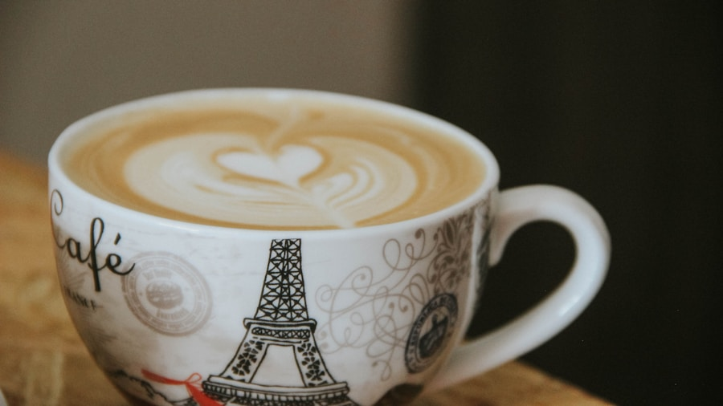
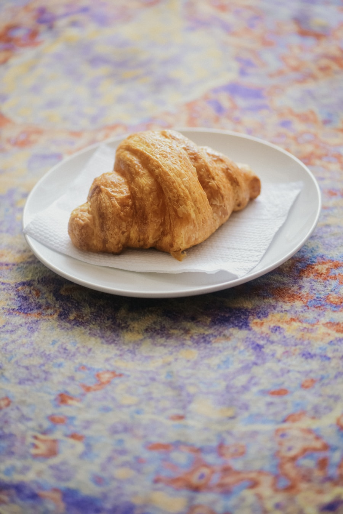
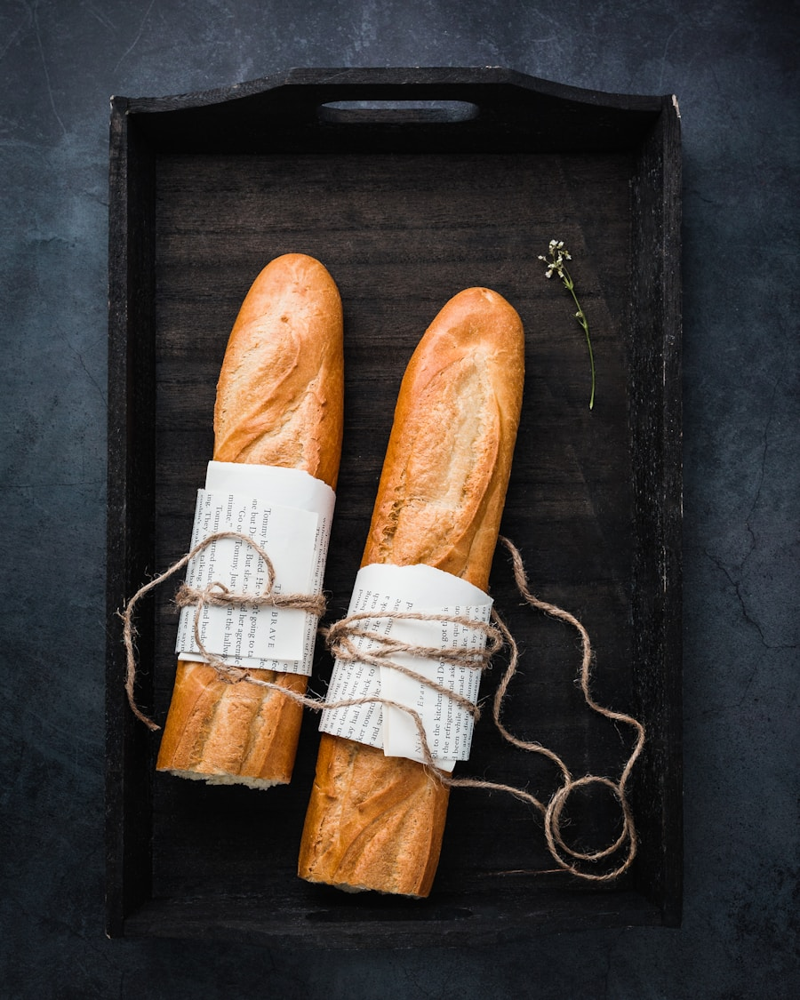
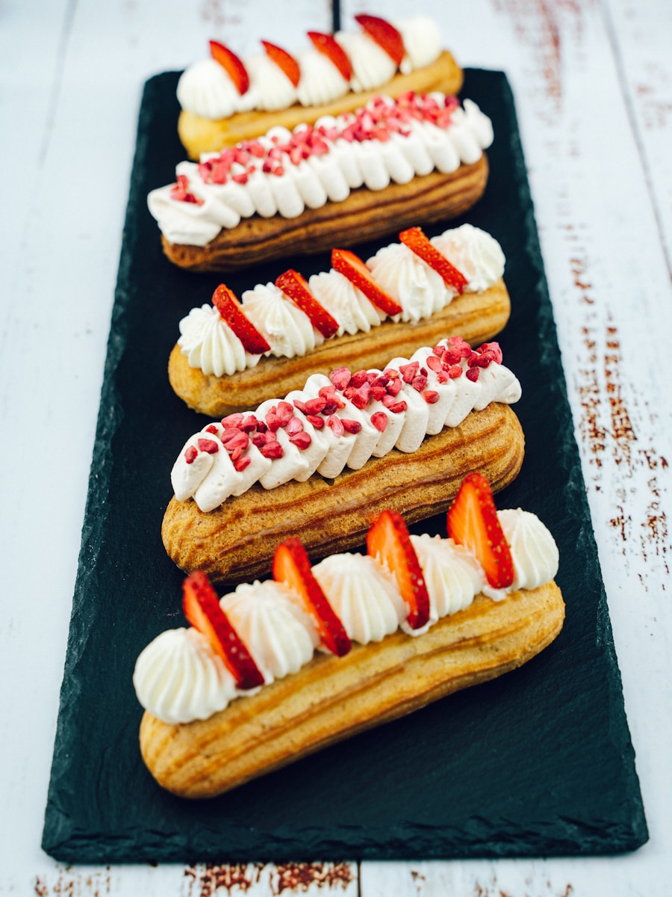
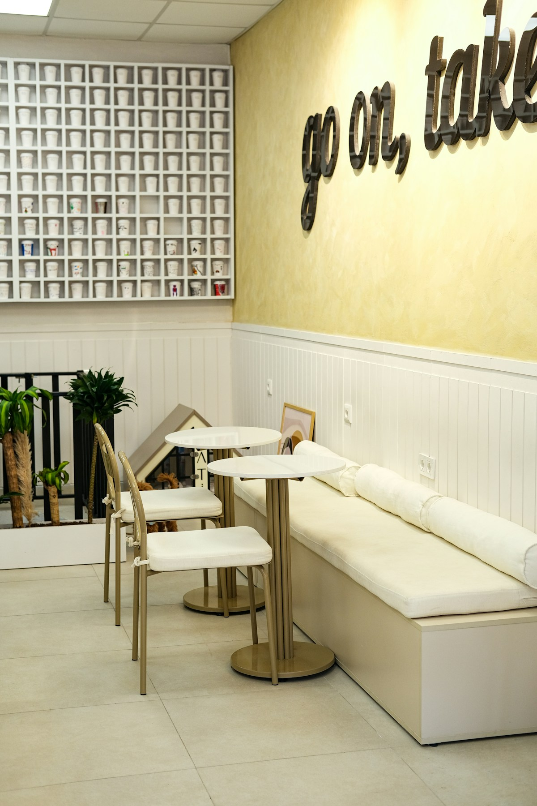

Kaffeespezialität
Café au Lait
Klassischer französischer Kaffee mit schaumiger Vollmilch – ein Morgenritual.
3,50 €Café & Pâtisserie Française
Ein Stück Paris mitten in Bergisch Gladbach. Entdecken Sie handgemachte Croissants, zarte Macarons, knusprige Baguettes und außergewöhnliche Kaffeespezialitäten – zubereitet mit Liebe zu Frankreich.
Von der ersten Tasse Kaffee am Morgen bis zum süßen Abschluss am Nachmittag – bei uns dreht sich alles um authentische französische Küche.



Eine kleine Auswahl dessen, was unsere Gäste immer wieder zu uns zurückbringt.
Klassischer französischer Kaffee mit schaumiger Vollmilch – ein Morgenritual.
3,50 €Goldgelb, luftig-blättrig, mit feinstem AOP-Butter – der klassische Genuss.
3,50 €
Zarter Brandteig, Schokoladencrème und glänzende Ganache – ein Klassiker.
4,50 €Knuspriges Baguette mit Schinken und Comté – ein einfaches, perfektes Mittagessen.
7,50 €
Der Franzose wurde aus einer tiefen Liebe zur französischen Café-Kultur geboren. Inspiriert von den kleinen Bistros der Pariser Seitenstraßen, möchten wir Ihnen dieses besondere Lebensgefühl nach Bergisch Gladbach bringen.
Bei uns steht die Qualität der Zutaten an erster Stelle. Unsere Croissants werden täglich frisch gebacken, unsere Macarons von Hand gefertigt, unser Kaffee sorgfältig ausgewählt.
Mehr erfahren